Landscape of Privacy and Security Countermeasures and Open Problems
IJCB Tutorial
September 15, 2024
Each Countermeasure approaches the trade-offs differently
Landscape of Existing Privacy and Security Countermeasures
Controllable Privacy Filter in Face Recognition
Controllable Privacy Filter in Face Recognition

Biometric template protection schemes
Bloom Filters-based biometric template protection scheme
PolyProtect biometric template protection scheme
- Modality: face
- Uses multivariate polynomials over user-specific secrets (exponents and coefficients)
- High risk of reversibility for attackers accessing multiple templates of the same face.
- Leaks soft biometric information [YKR+24]
- Fast comparison
- Trade-off:
Reflection on non-cryptographic Approaches
The good news about Cryptographic Approaches
Accuracy is preserved
Privacy and security can be enhanced independently of accuracy
Secret sharing-based biometric template protection scheme
- Modality: iris
- Reference and probe are split into shares between two non-colluding servers
- Accuracy preserved
- Privacy and security depend on the freshness of the shares
- Runs in $502.9$ms
Protection of sensitive information using Homomorphic Encryption
Inner product as a practical similarity measure under encryption
- Cosine similarity: $$s(\mathbf{x},\mathbf{y}) = \frac{\mathbf{x}^T\mathbf{y}}{\|\mathbf{x}\|\|\mathbf{y}\|}$$
- For normalized $\mathbf{\tilde{x}}$ and $\mathbf{\tilde{y}}$, cosine becomes inner product (IP): $$< \mathbf{\tilde{x}},\mathbf{\tilde{y}}> = \sum_{i=1}^{d} \tilde{x_i} \tilde{y_i}$$
IP requires $d$ multiplications and $d-1$ additions
Can we compute the inner product with few multiplications?
SIMD property of of Fully homomorphic encryption (FHE)

FHE-based BTP scheme with one homomorphic multiplication

- Modality: face (or any fixed-length representation)
- Inner product over normalized vectors.
- Precision-based quantization.
- Provable privacy and security
- Runs one-to-one comparison in $31.22$ ms
- Operates in the cleartext decision mode
Decision Modes in biometric recognition under encryption

Can we free the inner product from multiplication?
Pre-computed IP using a Lookup table-based comparator
Pre-computation to free IP from multiplication
FHE-based BTP scheme with zero homomorphic multiplication

- Modality: face (or any fixed-length representation)
- Inner product over normalized vectors.
- Table-based quantization.
- Permutations improves accuracy.
- Provable privacy and security
- Runs one-to-one comparison in $16.94$ ms
- Operates in the cleartext and encrypted decision modes
Biometric verification decision Modes
Summary of Biometric verification solutions w.r.t. the trade-offs
Protected Biometric Search Solutions in the Literature
Packing Approaches for Biometric Search
- Analysis of the special case of #References = Ciphertext capacity

Can we run biometric search under encryption with few multiplications?
Addition of a Reference in HERS
Search of a probe in HERS
Can we free biometric search under encryption from multiplication?
Addition of a Reference in an MFIP-based search

Search of a probe in an MFIP-based search
Summary of FHE-based Search solutions
There is room for improvement
Efficient Search with Dimensionality Reduction

- Build upon DeepMDS for dimensionality reduction.

Effect of the dimensionality reduction on search runtime
Open Problem: End-to-end encrypted biometric recognition solution
AutoFHE shows that inference under encryption is feasible and demonstrates it on encrypted $32 \times 32$ images
Open Problem: Computation integrity check of biometrics under FHE


We trust BUT we do not verify[BHV+21] Fast and accurate likelihood ratio-based biometric verification secure against malicious adversaries
Takeaways of this part

- No solution is perfect
- State-of-the-art solutions protect biometric data after feature extraction
- Open problems
- End-to-end protected biometric recognition (inference and training)
- Computation integrity check of biometrics under encryption
- Trust-but-verify principle in protected biometric systems